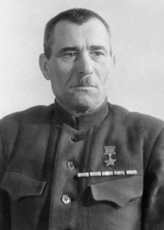

Шмырёв Минай Филиппович - командир 1-й Белорусской партизанской бригады.
Родился 23 декабря 1891 года в деревне Пунища Велижского уезда, ныне Витебского района Витебской области Белоруссии, в крестьянской семье. Белорус. Член ВКП(б)/КПСС с 1920 года. Образование начальное. В 1913 году призван в русскую армию. Участник 1-й Мировой войны 1914-1918 годов.
С 1918 года в Красной Армии, участвовал в Гражданской войне 1918-1920 годов в боях против белогвардейских войск генералов Краснова и Юденича. В 1921-1923 годах - командир отряда по борьбе с бандитизмом на Витебщине.
С 1923 года М.Ф. Шмырёв - заведующий волостным земельным отделом, председатель колхоза, директор льнозавода, картонной фабрики в Витебской области.
В первые дни Великой Отечественной войны М.Ф. Шмырёв (псевдоним "Батька Минай") стал организатором партизанского движения в родной республике. 9 июля 1941 года в посёлке Пудоть Суражского района Витебской области под его командованием из рабочих картонной фабрики был сформирован партизанский отряд.
В июле 1941 года отряд М.Ф. Шмырёва уничтожил кавалерийское подразделение противника, разгромил вражескую автоколонну и сжёг мосты через pеки Усвяча, Туровка, Шляхотка. В течение августа - сентября 1941 года партизаны Батьки Миная провели 27 боёв, уничтожили более 100 гитлеровцев и их пособников, 14 автомашин, 18 цистерн с горючим, 8 мостов.
12 сентября 1941 года отряд, разбившись на 3 группы, стремительной атакой ворвался в посёлок городского типа Сураж, разгромил районную управу и казарму немецких солдат.
8 апреля 1942 года по указанию Центрального комитета Коммунистической партии(большевиков) Белоруссии отряд М.Ф. Шмырёва объединился с партизанскими отрядами Суражского района - А.П. Дика, Д.Ф. Райцева и М.Ф. Бирюлина, образовав 1-ю Белорусскую партизанскую бригаду под командованием Миная Филипповича Шмырёва. К этому времени партизаны освободили территорию 15 сельских Советов в Суражском, Миховском и Витебском районах, образовав первый на Витебщине Суражский партизанский край. На освобождённой партизанами территории была восстановлена советская власть, которая сохранялась вплоть до прихода Красной Армии.
1-я Белорусская партизанская бригада Батьки Миная создала на участке Усвяты - Тарасенки вошедшие в историю Великой Отечественной войны, "Суражские (Витебские) ворота" - 40-километровый участок вдоль берега Западной Двины, через который можно было свободно переходить из оккупированной немецко-фашистскими войсками Белоруссии на освобождённую и контролируемую Красной Армией территорию. Через "Суражские ворота" на Большую землю уходили мирные жители, новобранцы, перегонялся скот, вывозилось зерно, здесь же партизаны получали оружие, проходили армейские диверсионно-разведывательные группы. Эти "ворота" просуществовали около шести месяцев, до сентября 1942 года.
Командуя крупным партизанским соединением, мужественный партизанский комбриг пережил страшную человеческую трагедию: взятые в заложники его четверо несовершеннолетних детей - дочери Лиза, Зина, сыновья Серёжа, Миша, а также сестра и мать жены были расстреляны фашистами...
С октября 1942 года М.Ф. Шмырёв - в Центральном штабе партизанского движения.
Указом Президиума Верховного Совета СССР от 15 августа 1944 года за образцовое выполнение правительственных заданий в борьбе против немецко-фашистских захватчиков в тылу противника и проявленные при этом отвагу и геройство и за особые заслуги в развитии партизанского движения в Белоруссии Шмырёву Минаю Филипповичу присвоено звание Героя Советского Союза с вручением ордена Ленина и медали "Золотая Звезда".
После войны - на советской и хозяйственной работе. Избирался членом Центрального исполнительного комитета Белорусской ССР 11-го созыва, депутатом Верховного Совета Белорусской ССР 2-5-го созывов.
Жил в городе Витебске (Белоруссия). Скончался 3 сентября 1964 года. Похоронен на воинском кладбище «Успенская горка» в Витебске.
Награждён 3 орденами Ленина (15.05.1942; 15.08.1944; 30.12.1948), орденами Красного Знамени (07.07.1926), Отечественной войны 1-й степени (01.01.1944), медалями, в том числе "Партизану Отечественной войны" 1-й степени, а также Георгиевским крестом 4-й степени, Георгиевскими медалями 3-й и 4-й степени.
Почётный гражданин города Витебск (26.06.1964).
В Витебске именем Героя Советского Союза М. Ф. Шмырёва названы улица, парк, открыт областной мемориальный музей. В 1971 году на студии "Беларусьфильм" снят художественный фильм "Батька".
Обелиск с бронзовыми барельефами Лизы, Зины, Серёжи и Миши Шмырёвых установлен на территории Суражской средней школы.